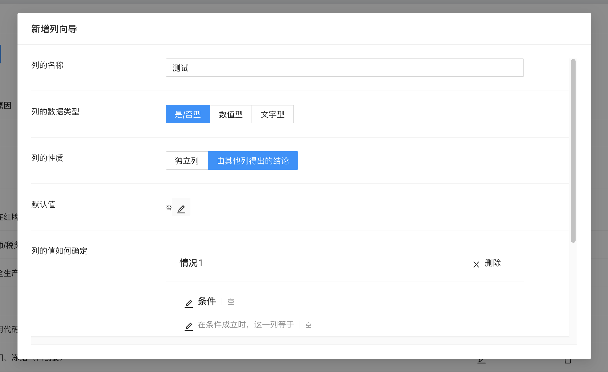
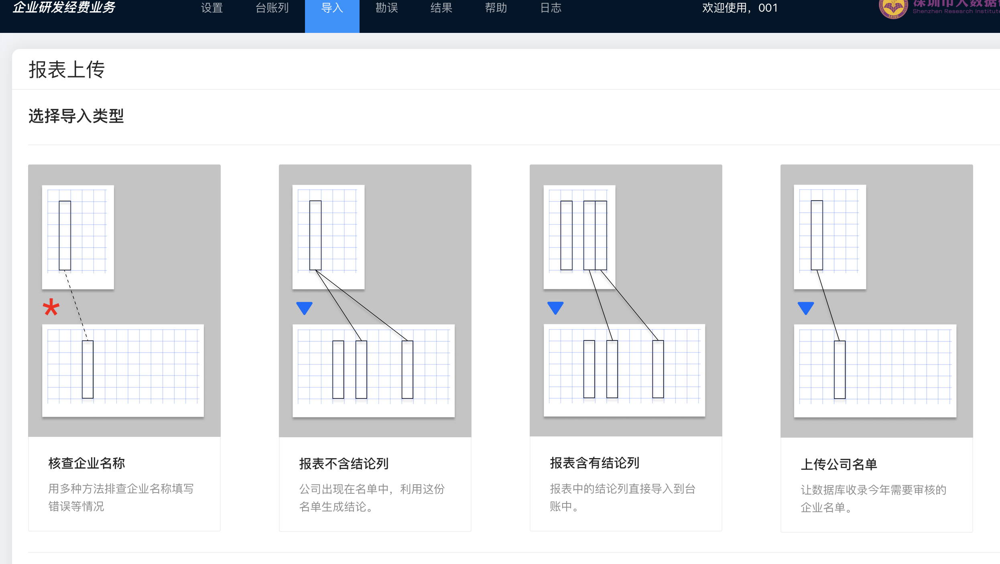

深圳市科创委企业研发经费业务台账系统
使用文档
- 版本: 2021.8
- 深圳市大数据研究院 政企大数据实验室
- 开发人员: 胥博凯
使用情景
通用情景: 本系统是一个多部门在线协同处理具有共同主键的数据的数据平台。
- 多部门协同: 允许位于不同地方的多个用户同时访问。
- 在线处理: 每个部门将数据准备好后，上传到系统后，可以利用系统提供的数据处理功能进行后续操作，无需手动处理。
- 增强的数据导入、检查、反馈、纠错功能，确保数据全面、准确、无遗漏地导入系统。
- 强大的自定义能力: 用户可以自定义列和列的属性，并且可以定义运算法则。
- 针对企业研发经费流程深度优化，尽力满足一切需求。
Note这里的主键的含义是: 一条数据中用来标识其身份的列。例如，现在有一张表，其中有企业名称，企业申报经费，企业的规模等，这里企业名称就是主键。
工作流程
功能一览表
| 所在页面 | 功能名称 | 描述 |
|---|---|---|
| 导入 | 报表读取 | 支持 Excel (xls, xlsx), CSV, TXT 文件; Excel 支持文件内有多张表; 报表的布局和格式无要求 |
| 导入 | 表格数据检查 | 检查不该为空的数据是否为空；根据台账列的设定检查导入的数据是否符合格式要求; 筛选掉报表中的不在台账中的企业数据 |
| 导入 | 多种导入方式 | 提供 3 种导入方式: 1. 收录企业名称名单; 2. 报表不含结论列 (报表是一份名单); 3. 报表包含结论列 (报表是一份含有主键的数据表) |
| 导入 | 核查企业名称 | 经过表格数据检查后，如发现某些公司未被台账收录，系统将会自动搜索已被收录的近似名称的企业/或使用补充列进行查询，把报表按照企业分为三份，一份可以直接导入，一份可以检查后再导入，一份无导入必要。 |
| 导入 | 生成数据核对名单 | 经过表格数据检查后，如发现不合格的数据，系统将会导出一份只含有不合格数据的核对名单，供用户填写完整，然后按相同导入方式再次导入。 |
| 勘误 | 修改已被收录公司名称 | 如果在检查中发现已被收录的公司名称有误，那么可以通过这个功能来修改 |
| 台账列 | 新建列 | 用户可自行新建列，自定义列的名称、数据类型、属性、默认值、本列的值的计算公式 |
| 台账列 | 删除列 | 用户可删除已有的列，列包含的所有数据也将一并删除 |
| 台账列 | 修改列 | 用户可修改已有的列，可修改默认值、本列的值的计算公式，但不可修改列名，属性，数据类型 |
| 台账列 | 表达式编辑器 | 辅助业余用户输入专业表达式的编辑器 |
| 台账列 | 为台账列定义多种情况 | 用户定义多种情况，根据不同情况采取不同的计算方法 |
| 设置 | 系统重置 | 删除所有数据、台账列，并使用预先定义的模版还原系统，供新一年的审批 |
| 设置 | 删除全部数据 | 保留台账列信息，单纯删除已有的数据 |
| 结果 | 计算数据 | 根据已有的独立列的信息，计算出在台账列中的需要根据其他列来确定的列中的数据，之后判定是否通过审批，以及资助的金额是多少，以及其他根据 |
| 结果 | 对未通过的企业给出原因 | 在导出台账为报表时，对于每个未通过的企业，系统都会为它们编辑一条未通过的原因，可以供企业进行反馈。 |
| 结果 | 企业通过情况、资助金额的可视化 | |
| 结果 | 将所有数据导出 | 以 Excel 表格 (xls) 的形式导出所有数据库中的数据 |
| - | 日志记录 | 用户的所有操作都会被记录到日志中 |
| 日志 | 查看所有日志 |
了解台账列
了解如何自主设置台账列和它们的计算公式
每一列的组成部分
台账列包括 5 个组成成分:
名称，数据类型，性质，默认值，计算公式
详细说明:
| 组成成分 | 说明 |
|---|---|
| 名称 | 每个台账列都有一个名称，是唯一的，简洁地表述这一列的内容 |
| 数据类型 | 系统设置了三种数据类型，分别为：是/否型（只能存储 「是」或「否」）；数值型（只能存储数字）；文字型（可以存储任何文本）。一个列只能选定一种数据类型 |
| 性质 | 系统提供两种性质，分别为：独立列（这一列的数据是用户上传的、从外部获取的）； 。一个列只能选定一种数据类型 |
| 默认值 | Note为了防止出现数据缺失，我们要求为每一列设置一个默认值，当数据缺失的时候可以利用默认值填充到数据空缺处。 |
| 计算公式 | 如果这一列的性质是「由其他列得出的结论」，那么用户需要告诉系统这一列的值是怎么计算而来的，需要提供一些计算公式 |
计算公式
如果这一列是由其他列来确定的，那么需要告诉系统这一列的值是如何计算出来的
术语: 情况、条件、算式
本系统考虑到实际需求，提供了「定义多种情况」的功能。
Note对于每一种情况，都有一个「条件」和「算式」。
「条件」指的是当满足什么条件时（当条件表达式的值是「是」），应该用下面这种「算式」算这个值。
Note所以，当定义「算式」时，首先要定义「条件」。
定义「条件」和「算式」时，都要用到下面的表达式编辑器。
表达式编辑器
为了更好地辅助非专业人员输入计算表达式，本系统提供了一个用户友好的表达式编辑器。
在这里，用户可以方便地把「台账列名」、「运算符号」、「数值」、「文字」、「是/否」、括号等加入到自定义表达式中。
例如:
A 在「使用列名」一栏，可以通过点击相应列名，直接添加到表达式中去：
B 在「使用运算符号」一栏，可以通过点击相应运算符号，直接添加到表达式中去：
也可以通过下方的「快捷方式」，加入常用的几种符号，只需按下相应按钮即可：
C 在「使用数值」一栏，可以通过输入数字，按下「对勾」按钮，直接添加到表达式中去：
D 在「使用文字」一栏，可以通过输入数字，按下「对勾」按钮，直接添加到表达式中去：
E 在「使用是/否值」一栏，可以通过按相应的按钮（是、否），直接添加到表达式中去：
下面预览一下刚刚的操作都会如何表现出来：
Note这是一串无意义的表达式，仅做演示用。表达式语法会在下面的内容中提到。
* 计算公式语法
A 逻辑计算符号 (1)
| 适用于 | 语法 | 举例 | 结果 | 含义 |
|---|---|---|---|---|
| 是/否型 | 台账列名-是/否型 符号-等于 是/否 |
是否列入黑名单 等于 是 |
是/否型 |
表示满足「这家企业列入黑名单」的条件 |
| 数值型 | 台账列名-数值型 符号-等于 数字 |
企业申报研发经费(万元) 等于 500 |
是/否型 |
表示这家企业满足「申报研发经费为 500 万元」的条件 |
| 文字型 | 台账列名-文字型 符号-等于 文字 |
专家审核意见 等于 建议复查 |
是/否型 |
表示这家企业满足「专家审核建议复查」的条件 |
| 是/否型 的简化用法 | 台账列名-是/否型 |
是否列入黑名单 （Note是/否型 可以省略等于 是 ） |
是/否型 |
表示满足「这家企业列入黑名单」的条件 |
| 是/否型 | 台账列名-是/否型 符号-不等于 是/否 |
是否列入黑名单 不等于 是 |
是/否型 |
表示不满足「这家企业列入黑名单」的条件 |
| 文字型 | 台账列名-文字型 符号-不等于 文字 |
专家审核意见 不等于 建议复查 |
是/否型 |
表示这家企业不满足「专家审核建议复查」的条件 |
| 数值型 | 台账列名-数值型 符号-大于/小于/大于等于/小于等于/不等于 数字 |
企业申报研发经费(万元) 小于 500 |
是/否型 |
表示这家企业满足「申报研发经费小于 500 万元」的条件 |
| 两个台账列名 | 台账列名1-数值型 符号-等于/大于/小于 台账列名2-数值型 |
企业申报研发经费(万元) 小于 税务局反馈研发费用(万元) |
是/否型 |
表示这家企业满足「申报研发经费小于税务局反馈研发费用」的条件 |
B 逻辑计算符号 (2)
此处括号的作用就是确定先后顺序、优先级，善用括号，方可实现更复杂的判断。
| 适用于 | 语法 | 举例 | 结果 | 含义 |
|---|---|---|---|---|
| 两个任意条件 | ( 条件1 ) 符号-且 ( 条件2 ) |
( 企业申报研发经费(万元) 小于 500 ) 且 ( 是否列入黑名单 等于 是 ) |
是/否型 |
表示同时满足「这家企业列入黑名单，研发经费小于500万元」的条件 |
| 两个任意条件 | ( 条件1 ) 符号-或 ( 条件2 ) |
( 企业申报研发经费(万元) 小于 500 ) 或 ( 是否列入黑名单 等于 是 ) |
是/否型 |
表示满足「这家企业列入黑名单，研发经费小于500万元」的条件之一 |
| 多个任意条件 | ( 条件1 ) 符号-或 ( 条件2 ) 符号-或 ( 条件3 ) |
( 企业申报研发经费(万元) 小于 500 ) 或 ( 是否列入黑名单 等于 是 ) 或 ( 专家审核意见 等于 建议复查 ) |
是/否型 |
表示满足「这家企业列入黑名单，研发经费小于500万元，专家审核建议复查」的条件之一 |
| 多个任意条件 | ( 条件1 ) 符号-且 ( 条件2 ) 符号-且 ( 条件3 ) |
( 企业申报研发经费(万元) 小于 500 ) 且 ( 是否列入黑名单 等于 是 ) 且 ( 专家审核意见 等于 建议复查 ) |
是/否型 |
表示同时满足「这家企业列入黑名单，研发经费小于500万元，专家审核建议复查」的条件 |
| 高阶用法 | ( ( 条件1 ) 符号-或 ( 条件2 )) 符号-且 ( 条件3 ) |
( ( 企业申报研发经费(万元) 小于 500 ) 或 ( 专家审核意见 等于 建议复查 ) ) 且 ( 是否列入黑名单 等于 是 ) |
是/否型 |
表示先满足「研发经费小于500万元，专家审核建议复查」其中之一，又要再满足「这家企业列入黑名单」 |
| 是否型 的 简化用法（可以省去括号） | 条件1 符号-且 ( 条件2 ) |
( 企业申报研发经费(万元) 小于 500 ) 且 是否列入黑名单 |
是/否型 |
表示同时满足「这家企业列入黑名单，研发经费小于500万元」的条件 |
C 逻辑计算符号 (3)
一方面可以用「不等于」符号，另一方面也可以用更通用的「不」
| 适用于 | 语法 | 举例 | 结果 | 含义 |
|---|---|---|---|---|
| 是/否型 | 符号-不 台账列名-是/否型 |
不 是否列入黑名单 |
是/否型 |
表示不满足「这家企业列入黑名单」的条件 |
| 任意条件 | 符号-不 ( 条件1 ) |
不 ( 企业申报研发经费(万元) 等于 500 ) |
是/否型 |
表示这家企业不满足「申报研发经费为 500 万元」的条件 |
D 数值计算符号 (1)
| 适用于 | 语法 | 举例 | 结果 | 含义 |
|---|---|---|---|---|
| 数值型 | 台账列名-数值型 符号-加/减/乘/除/整除 数值 |
企业申报研发费用(万元) 减 100 |
数值型 |
表示不满足「这家企业列入黑名单」的条件 |
| 数值型 | 台账列名-数值型 符号-加/减/乘/除/整除 台账列名-数值型 |
企业申报研发费用(万元) 减 专家核定研发费用(万元) |
数值型 |
表示这家企业不满足「申报研发经费为 500 万元」的条件 |
E 数值计算符号 (2)
| 适用于 | 语法 | 举例 | 结果 | 含义 |
|---|---|---|---|---|
| 多个数值型表达式 | 符号-取最大值 ( 数值型表达式1 逗号 数值型表达式2
逗号 更多表达式 ) |
取最大值 ( 500 , 企业申报研发费用(万元) , 专家审核研发费用+100 ) （Note不要漏加逗号） |
数值型 |
得到「500，企业申报研发费用，专家核定研发费用+100」中的最大值 |
| 多个数值型表达式 | 符号-取最小值 ( 数值型表达式1 逗号 数值型表达式2 逗号 更多表达式 ) |
取最小值 ( 500 , 企业申报研发费用(万元) , 专家审核研发费用+100 ) （Note不要漏加逗号） |
数值型 |
得到「500，企业申报研发费用，专家核定研发费用+100」中的最小值 |
| 取绝对值 | 符号-取绝对值 ( 数值型表达式1 ) |
取最小值 ( 专家审核研发费用-500 ) |
数值型 |
得到「专家核定研发费用-500」中的绝对值 |
F 处理文本
Note取前一、二、三位 这一运算符号只能用在 「文本型」数据后面
| 适用于 | 语法 | 举例 | 结果 | 含义 |
|---|---|---|---|---|
| 文字型 | 台账列名-数值型 符号-取前一位 |
组织机构代码 取前一位 |
文字型 |
取出一个文本的前一个文字 |
| 文字型 | 台账列名-数值型 符号-取前两位 |
组织机构代码 取前两位 |
文字型 |
取出一个文本的前两个文字 |
| 文字型 | 台账列名-数值型 符号-取前三位 |
组织机构代码 取前三位 |
文字型 |
取出一个文本的前三个文字 |
| 文字型 | 文本 符号-在...中 台账列名-数值型 |
异常 在...中 专家评审意见 |
是/否型 |
判断「异常」字样是否出现在了一个台账列中 |
G 高级数据结构：列表
Note不要漏加逗号
| 适用于 | 语法 | 举例 | 结果 | 含义 |
|---|---|---|---|---|
| 几个元素 | [ 元素1 , 元素2 , 元素3 ] |
行业代码(数据类型:文本) 取前两位 在...中 [ 16(文本) , 17(文本) , 51(文本) ] |
是/否型 |
行业代码的前两位是否在列表[16 17 51] 中 |
使用原则
关于条件
只有当这个「条件」的运算结果等于 是 时，条件被看作成立。
比如，这里定义条件为：( 企业申报研发经费(万元) 小于 500 ) 且 ( 是否列入黑名单 等于 是 ) ，那么只有当这个条件的运算结果等于是 的时候，这个条件才成立。
Note定义条件时，一定要确保它的结果是「是/否型」，这是非常重要的。
关于这一列的值
条件成立，这一列的值才等于这个「条件」对应的「算式」的值。
上面所述当「条件」等于 是 时，才会计算它对应的「算式」。
关于算式
Note定义算式时，不需要额外写：这一列的值 等于 某表达式，只需要写一个可以计算出来的式子 某表达式 即可。
范例
这里以「通过审批」这一列作为演示:
在「台账列」页面找到「通过审批」这一台账列，点击「编辑按钮」。
在打开的页面找到「列的值如何确定」这一行。
1. 定义第一个情况
1.1 定义第一个情况的「条件」：按下「条件」前面的「编辑」按钮，打开编辑器。
1.2 打开编辑器后，输入以下项目：这里的条件转换为自然语言就是：企业申报研发费用大于500万元，若无其他联用条件，可不加（，）括号
1.3 点击完成按钮，保存条件。
1.4 保存后看到：条件已经有了
下一步，点击下面一行 这一列等于 之前的「编辑」按钮，输入这一条件成立时，这一列应等于的「算式」：
1.5 输入下面的内容，转换成自然语言就是，要同时满足不在黑名单中，并且还要是高新技术企业。
Note这里要注意，这个「算式」的结果算出来，应该是「是/否型」，只会是「是」或「否」。
这也是我们所期望的。
因为这一列就是「通过审批」，「是」代表通过了，「否」代表没有通过。
1.6 点击完成，保存算式，看到：

这一种情况已经定义好了。
1.7 点击「新增情况」按钮，定义下一种情况。
2. 定义第二个情况
2.1 点击「条件」前面的「编辑」按钮：
2.2 输入下面的「条件」，转换成自然语言就是，当企业申报研发费用小于500万元时。
2.3 按「完成」按钮，保存「条件」。之后再定义「算式」。转换成自然语言就是，不存在争议纠纷，并且是高新技术企业。

Note这个「算式」的结果算出来，应该是「是/否型」，只会是「是」或「否」。
这也是我们所期望的。
因为这一列就是「通过审批」，「是」代表通过了，「否」代表没有通过。
2.4 按「完成按钮」保存「算式」。
3. 到这里就完成了不同情况的定义。
如果需要帮助，请联系开发人员 (电子邮件: bokaixu@link.cuhk.edu.cn)。
新建台账列
新建一个列的详细步骤
摸底
在新建这个列之前，要思考的问题是，这一列：
- 用来存储什么数据？
- 数据是什么类型？是文本、是否型，还是数值？
- 数据是怎么得到的？是从外部获取的，还是有一些已知数据计算而来的？
操作
1. 在「台账列」页面，点击「新建列」按钮。
2. 在打开的窗口中，逐一填写这一列的相关信息：

列的名称、数据类型、性质、默认值的介绍：
| 组成成分 | 说明 |
|---|---|
| 名称 | 每个台账列都有一个名称，是唯一的，简洁地表述这一列的内容 |
| 数据类型 | 系统设置了三种数据类型，分别为：是/否型（只能存储 「是」或「否」）；数值型（只能存储数字）；文字型（可以存储任何文本）。一个列只能选定一种数据类型 |
| 性质 | 系统提供两种性质，分别为：独立列（这一列的数据是用户上传的、从外部获取的）； 。一个列只能选定一种数据类型 |
| 默认值 | Note为了防止出现数据缺失，我们要求为每一列设置一个默认值，当数据缺失的时候可以利用默认值填充到数据空缺处。 |
| 计算公式 | 如果这一列的性质是「由其他列得出的结论」，那么用户需要告诉系统这一列的值是怎么计算而来的，需要提供一些计算公式 |
关于列的值如何确定（计算公式），请点击这里查看对应章节的详细介绍。

3. 全部填好之后，进入下一步。
确认无误，点击确定按钮。将自动新增这一列。
4. 查看结果
这样就完成了新建列。
修改台账列
在「台账列」页面中，看到每一个项目后面都有「编辑」按钮，点击按钮，就可以编辑了。

Note修改台账列时，列的名称、数据类型、性质都不能更改。因为任意的修改可能会对之前定义的台账列产生波及影响。
如果需要修改这些属性，请另外新建台账列。
Note另外新建列之后，不要忘了建立新的计算公式中的依赖关系。
删除台账列
删除不再使用的台账列
在「台账列」页面中，看到每一个项目后面都有「删除」按钮，点击按钮，在询问框中点击确定，就可以删除了。
Note任意的删除可能会对之前定义的台账列产生波及影响。
Note删除列之后，不要忘了删除旧的计算公式中的依赖关系，否则，计算结果将会出现问题。
特别台账列
本系统中的台账列分为两类：
A 特别列
系统保留了几个用途特殊的台账列，不可删除，但可以编辑。
这些列以黑体显示，被安置在「台账列」的最前方。这些列被保留是有原因的。
「通过审批」列：
存储是否通过本年度的审批结果。用户在这里可以Note自定义审核通过的标准。
「资助金额」列：
存储通过审批企业的资助金额。用户在这里可以Note自定义资助金额的发放标准。
「未通过审核原因」列：
存储企业未通过审批的原因。系统将自动写入原因。Note用户无需对本列进行操作。
Note用户可以自主修改这些特殊列，但是用户无权限删除这些列。
B 用户可完全管理的普通列
Note普通列完全由用户控制，用户可以增添、删除、修改这些列的属性。
视频教学
导入数据
导入 Excel报表 (xlsx, xls), CSV 数据表, TXT 数据表
开始
1. 上传报表文件
在「导入」页面，单击上传报表按钮。
选取需要上传的文件。按「确定」按钮，系统将会自动处理这个文件。
2. 选择要使用的表
单击上方需要使用的表的名称，系统将自动读取这张表。对于 非 Excel 表格，因为只有一张表，所以直接点击 唯一的 Sheet1 即可。
读取完毕后，点击「确定使用该表」 。
3. 选择操作类型
系统提供 3 个导入方式和 1 个企业名称检查功能:

点击对应的卡片即可选择导入类型。
核查企业名称：上传前检查
拿到一份报表，为了防止上面的公司信息有误，用户可以先用本功能进行排查。
这里的用例是: 「2016-2018国家高新技术企业.xlsx」
1. 依然首先上传报表
2. 选择报表中的一张表
3. 选择「核查企业名称」卡片
4. 选择公司名称列（必选），如果有补充列，可以一并选上补充列。
Note补充列是指当公司名称未被收录时，可以用来代表这一家公司的那个属性，比如「统一社会信用代码」就可以担当。
5. 这里使用补充列，（不使用补充列的话，请看后续章节）下面指定指定哪个是补充列。
选择好之后，就按「下一步」按钮。
Note这里台账列中有一列为「统一社会信用代码」，报表中有一列为「统一社会信用代码」，这是两个不同体系中的列，但是都代表「统一社会信用代码」，所以可以用它来做查找。
6. 进入查找页面。
Note这里提供了两种查找方式，第二种更加准确，第一种是在缺乏补充列的时候的唯一查找方法。
选择你想使用的查找方法。点击对应按钮。这里先试一下「使用补充列进行匹配」。

Note根据查找结果，你的报表会被按公司分成三部分，其中的数据没有被更改。
7. 查找结果
结果文件列表中出现了三个文件。
A 第一个中包含了已被收录的企业部分。这部分数据下载下来之后，可以直接导入数据库。如下图：
Note其中的数据没有任何修改，只是把已被收录的企业拿出来了。
B 第二个中包含了没有被收录但有极大可能写错了名称，这部分需要人工校对。
这张表只是多增加了紫色这一列。数据部分没有任何更改。
这一列是按照「统一社会信用代码」作为补充列查找出来的公司名称。就是说这个表内的公司，都是写错了名字导致没有匹配上，但是用补充列能匹配上的公司。
Note如果是报表中写错了名称，那么用匹配出来的公司名称，替换掉原有公司名称就可以了。结果如下：
Note如果不认可某个匹配结果，可以直接把这个结果整行删除。
Note如果是公司自身申报时写错了名称，那么就要去「勘误」页面，修改台账中的公司名称，修改好了之后，在这张表格中就不用做更改了。
这样全都处理好之后，
保存，然后正常导入数据就可以了。
C 第三个中包含的是依然没有匹配上的公司，理论上说，这些数据就可以放弃了，它们确实没有被台账收录，无需导入。

8. 使用相似度查找
按下「使用相似度查找」，就可以利用公司名称的相似性，去查找最有可能是同一家公司的几个名字。
同样会返回三个文件：
A 可以直接导入的文件，下载后按照正常导入流程导入即可。
B 未被收录但是通过相似度能够匹配上的部分：
这张表只是多增加了紫色这一列。数据部分没有任何更改。
这一列是按照名称相似度查找出来的公司名称。就是说这个表内的公司，都是写错了名字导致没有匹配上，但是用相似度能匹配上的公司。
Note如果是报表中写错了名称，那么用匹配出来的公司名称，替换掉原有公司名称就可以了。结果如下：

Note如果不认可某个匹配结果，可以直接把这个结果整行删除。
Note如果是公司自身申报时写错了名称，那么就要去「勘误」页面，修改台账中的公司名称，修改好了之后，在这张表格中就不用做更改了。

这样全都处理好之后，
保存，然后正常导入数据就可以了。
C 第三个中包含的是依然没有匹配上的公司，这些数据可以放弃了，它们确实没有被台账收录，无需导入。
视频教学
数据格式
Note上传的报表中，数据的类型一定要和台账列中定义的一致。
比如，已经定义了台账中「企业申报研发经费」这一列为「数值型」，那么报表中相应的列中的数据一定要是「数值型」，不可以出现汉字或其他。
Note即使是缺失数据，也要用对应的「数值型」来表示，比如，一家企业没有申报研发费用，那么不可以写「未申报」，而应该写「0」，也就是这一列的默认值。
正确的数据格式对于系统正常运行至关重要。
勘误
A 修改台账中收录的公司名称
1. 打开系统的「勘误」页面
2. 看到「更改已收录企业名称」模块，点击「开始更改」按钮。
然后选择要更改的企业名称，假设这里查实了「深圳市盛天商业机器有限公司」申报时自己拼错了，那么，在「更改前名称」处选择这家公司。
可以用关键词搜索，在下拉框中选择需要更改的公司即可。
3. 然后在右边「更改后名称」填写更改后的名称：
4. 填写好后，按「确认更改」按钮。
5. 系统提示更改成功。
B 修改台账中的数据
本系统不支持单独修改某个企业的数据，只能通过导入报表的形式来更新数据。如果需要更改数据，请先把数据做成一张报表
1. 准备一张 Excel 报表，格式如下：
| 被更新的企业名称 | 需要更新的列1（如企业申报研发费用） | 需要更新的列2（如是否国家高新技术企业） | ... |
|---|---|---|---|
| 深圳市联合智能卡有限公司 | 120 | 是 | ... |
| 深圳市华测计量技术有限公司 | 1200 | 否 | ... |
| ... | ... | ... | ... |
Note每次修改的列数不宜过多。
2. 然后利用「导入」-「报表含结论列」方式导入到台账中。
具体步骤请参考上文「导入 - 报表含结论列」。
计算结果
计算前检查
启动计算程序之前，如有必要可以先行检查台账中的数据。
打开「勘误」页面，找到「查看台账中现有数据」页面，即可下载台账中现有的全部数据。
下载的 Excel 表格中，存在缺失的数据都已经标红。
Note如果发现数据存在问题，可以参考「勘误」这一节的内容，进行相应修改。
生成结果
打开「结果」页面，在页面上方找到「更新计算数据」卡片，点击「更新计算数据」按钮，即可自动计算出所有列的结果，包括是否通过审核、资助金额、以及其他结论（取决于用户如何自定义台账列）。
Note计算所花费的时间由数据量以及定义的台账列数量有关，通常花费时间为一分钟到数分钟不等，请耐心等待结果。
计算完成后，页面上的相关数据将会及时更新。并且计算完成后会有提示。
导出台账与报告
在「结果」页面，先运行上述「更新计算数据」，待完成后，在页面底部点击「导出台账为 Excel 表格」，即可得到一份 台账列表格。其中包括了所有原始数据、依赖原始数据得到的新数据、审核结论、资助金额、未通过审核的原因，以及其他自定义量。
视频教学
重置与删除
系统重置
Note系统重置将会删除所有台账列的信息和所有企业数据。
1. 在「设置」页面，点击「系统重置」按钮。
2. 在弹出窗口中点击确定。
3. 显示数据库已经被清空，现在选择新台账中所需要的台账列。
Note系统为用户预置了一些常用台账列，这里列默认都会添加到新台账中。如果不需要某个，可以点击「x」按钮删去，即可不要这个列。
4. 选择完毕，按「确定」按钮。
5. 提示完成。
清空数据
Note这将删除台账中的全部数据，但不会删除台账列信息。
1. 点击「设置」页面的「清空数据」按钮。
2. 确认删除。
3. 页面刷新，删除成功，发现之前的数据都消失了。
日志记录
本系统内置了用户操作收集功能，所有用户操作都会被如实记录，并存储到数据库中，供查阅。要查阅日志，请打开「日志」页面，即可查看。
用户管理
本系统尚未有用户管理功能。只能用现有账号登录。